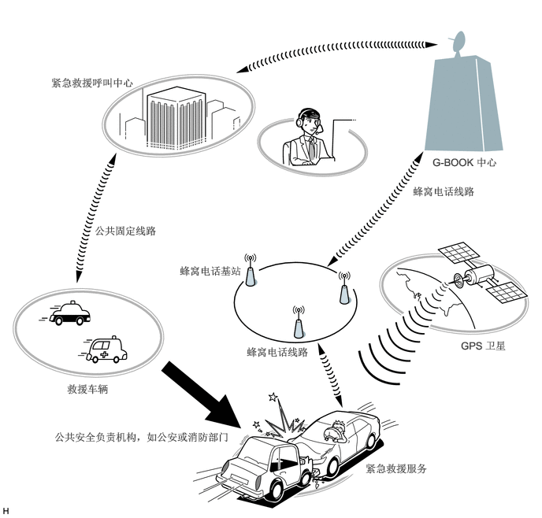
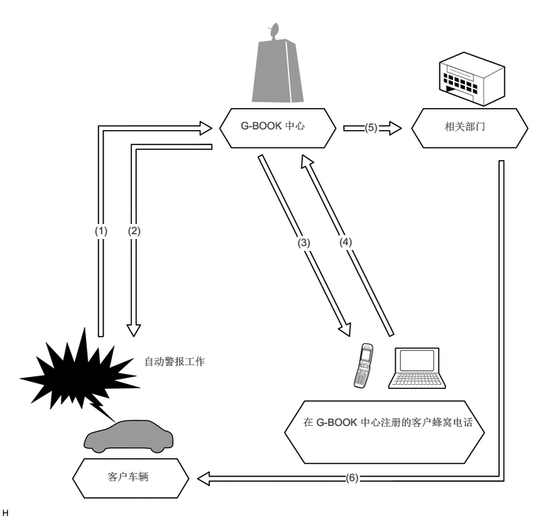
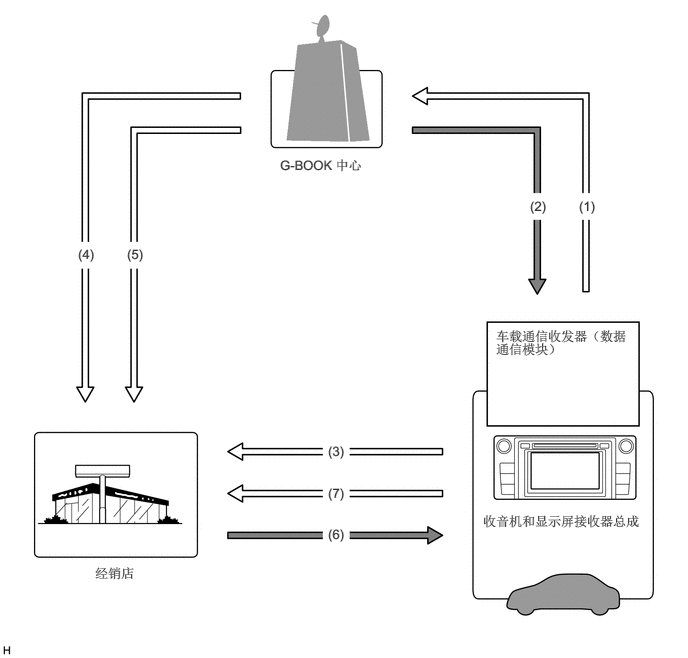

主要零部件的功能
| 零部件 | 功能 | ||
|---|---|---|---|
|
*1：将电源开关置于 ON (ACC) 位置后，绿色和红色指示灯立即点亮 5 秒。 *2：使用 Wi-Fi 通信时。 |
|||
| 车顶天线总成 | 通过通信网络收发用于 G-BOOK 服务的数据和语音信号。 | ||
| 阅读灯总成 | 内置电话扩音器总成和紧急呼叫开关。 | ||
| 电话扩音器总成 | 将扩音器语音信号发送至收音机和显示屏接收器总成或车载通信收发器（数据通信模块）。
·
使用话务员服务时：将扩音器语音信号发送至收音机和显示屏接收器总成。 ·
紧急呼叫时：将扩音器语音信号发送至车载通信收发器（数据通信模块）。 |
||
| 紧急救援呼叫开关 | 按下时，将开关信号发送至车载通信收发器（数据通信模块）。
（执行手动保养检查或手动紧急救援呼叫时。） |
||
| LED 指示灯*1 | 绿色 | ·
系统有服务合约并在服务区内正常工作时点亮。 ·
在通话或保养检查期间闪烁，系统发生故障时熄灭。 |
|
| 红色 | ·
车辆不在服务区内时点亮。 ·
紧急救援呼叫或保养检查中止时闪烁。 ·
系统正常工作时熄灭。 ·
需要更换求救信号电池（备用电池）时闪烁。 ·
在诊断模式下闪烁，以指示 DTC。 |
||
| 车载通信收发器（数据通信模块） | 使用车顶天线总成通过通信网络收发用于 G-BOOK 系统的数据和语音信号。
·
使用话务员服务时：将接收的语音信号发送至收音机和显示屏接收器总成。 ·
使用话务员服务时：将发送的语音信号从收音机和显示屏接收器总成发送至电话天线总成。 ·
紧急呼叫时：将接收的语音信号发送至前 1 号扬声器总成（右侧）和前 3 号扬声器总成（右侧）。 ·
紧急呼叫时：接收电话扩音器总成发送的语音信号。 ·
紧急呼叫时：将静噪信号发送至立体声部件放大器总成。（呼叫过程中，静噪功能激活。） ·
紧急呼叫时：将位置信息发送至 G-BOOK 中心。 ·
出现警告时：通过 CAN 通信接收来自组合仪表总成的信号（指示系统失效或故障），并将其发送至 G-BOOK 中心。 ·
防盗系统被激活时：将警报喇叭鸣响信息发送至 G-BOOK 中心。 |
||
| 求救信号电池（备用电池） | 求救信号电池是锂二氧化锰非充电电池。
·
车辆主蓄电池在事故中损坏时，向车载通信收发器（数据通信模块）供电以进行紧急呼叫。 ·
检查蓄电池的情况并通过车载通信收发器（数据通信模块）将自诊断结果发送至收音机和显示屏接收器总成。 ·
车载通信收发器（数据通信模块）接收到指示求救信号电池故障、失效或不兼容的诊断故障码 (DTC) 时，车载通信收发器使红色 LED 指示灯闪烁以通知驾驶员。车载通信收发器还将存储 DTC。 |
||
| 收音机和显示屏接收器总成 | 使用车载通信数据信号，收发往返于车载通信收发器（数据通信模块）的数据，此数据用于 G-BOOK 系统。
·
音频系统起动时将起动信号发送至导航 ECU。 ·
使用话务员服务时：将来自电话扩音器总成的发送的语音信号发送至车载通信收发器（数据通信模块）。 ·
使用话务员服务时：使用 AVC-LAN 通信信号将来自车载通信收发器（数据通信模块）的“接收的语音信号”发送至立体声音响放大器总成。 ·
使用 Wi-Fi 通信，收发往返于网络共享兼容蜂窝电话或移动 Wi-Fi 路由器的车载通信数据，此数据用于 G-BOOK 系统。 |
||
| 导航天线总成 | 接收 GPS 无线电波，并将其发送至导航 ECU。 | ||
| 导航 ECU | 使用车载通信数据信号，收发往返于车载通信收发器（数据通信模块）的数据，此数据用于 G-BOOK 系统。
·
定期将车辆位置信息发送至车载通信收发器（数据通信模块）。 ·
进行紧急救援呼叫时，通过车载通信收发器（数据通信模块）发送车辆位置信息。 |
||
| 方向盘装饰盖开关总成 | 将来自音量开关、模式开关和语音开关等开关的操作信号发送至螺旋电缆分总成。 | ||
| 螺旋电缆分总成 | 将来自方向盘装饰盖开关总成的工作信号发送至收音机和显示屏接收器总成。 | ||
| 主车身 ECU（多路网络车身 ECU） | 激活防盗系统时，将安全控制信号发送至车载通信收发器（数据通信模块）。 | ||
| 空气囊 ECU 总成 | 空气囊展开时，将激活信号发送至车载通信收发器（数据通信模块）。（进行自动紧急救援呼叫。） | ||
| 组合仪表总成 | ·
车辆出现故障时显示警告，并发送警告显示信号至车载通信收发器（数据通信模块）。 ·
将车速信号发送至立体声部件放大器总成和导航 ECU。 |
||
| 立体声部件放大器总成 | 接收作为 AVC-LAN 信号的收音机和显示屏接收器总成发送的“接收的语音信号”，并将其作为车辆扬声器的声音输出。（使用话务员服务时。） | ||
| 前 1 号扬声器总成（右侧） | 输出 G-BOOK 中心话务员语音声音。 | ||
| 前 3 号扬声器总成（右侧） | |||
| DLC3 | 连接 GTS 时允许进行系统诊断。 | ||
功能
紧急救援服务
如果发生事故，如空气囊展开，紧急救援服务将自动呼叫 G-BOOK 中心话务员，以帮助救援人员快速赶到现场。
在发生交通事故或急病发作的情况下，可以使用车载通信收发器（数据通信模块）呼叫紧急救援中心并发送位置信息和注册用户信息

可手动或自动激活紧急救援服务与 GBOOK 中心取得联系。
| 呼叫方法 | 工作条件 |
|---|---|
| 自动呼叫 | 如果发生交通事故时，例如空气囊展开时，则进行自动呼叫。无论乘员情况如何，自动呼叫都会启动。 |
| 手动呼叫 | 在突发疾病或发生交通事故但空气囊未展开时，按压顶置控制台上的紧急救援呼叫开关即可进行手动呼叫。
（要按压紧急救援呼叫开关，需要移开紧急救援呼叫开关盖。） |
连接 G-BOOK 中心并执行下列保养检查可确认紧急救援服务的工作和合约状态。
| 保养检查 | 概要 |
|---|---|
| 自动保养检查 | 车载通信收发器（数据通信模块）定期自动进入紧急救援中心以确认用户是否仍处于注册状态 |
| 手动保养检查 | 将电源开关置于 ON (IG) 位置后，红色和绿色指示灯点亮时，用户可按下紧急救援开关 10 秒或更长时间以便进入 G-BOOK 中心并确认用户仍处于注册状态。 |
下列情况下，可能无法使用紧急救援服务或服务质量可能受影响。
G-BOOK 在线服务尚未建立或尚未完成第一次手动保养检查。
由于车载通信收发器（数据通信模块）或其他相关设施的故障导致通信中断。
无法确定位置。
由于服务提供商系统故障，通信中断。
用于紧急救援系统的通信网络出现通信故障。
由于紧急救援提供商的原因，紧急救援服务暂停或中止。
尽管进行了手动呼叫，但由于用户无法回答 G-BOOK 中心的问题而无法确认情况。
求救信号电池（备用电池）发生故障或损坏。
求救信号电池（备用电池）和车载通信收发器（数据通信模块）之间断路。
防盗追踪服务（自动警报通知、车辆追踪和相关部门联系）
防盗系统激活时，防盗追踪服务通知 G-BOOK 中心警报已工作。
G-BOOK 中心呼叫用户以告知警报已工作。如果电话无法拨通，则 G-BOOK 中心将发送短信服务 (SMS) 信息。
如果车辆被盗，则可根据用户请求追踪车辆位置。如果用户请求，则 G-BOOK 话务员请求相关部门查找被盗车辆并妥善处理案件。

| 编号 | 警报通知过程 |
|---|---|
| (1) | 车辆被盗且自动警报工作。 |
| (2) | 确定车辆位置。 |
| (3) | 通过电话告知用户车辆被盗。如果电话无法拨通，则通过短信服务 (SMS) 信息告知用户。 |
| (4) | 用户发出请求。 |
| (5) | 请求发送至相关部门。 |
| (6) | 相关部门做出回应。 |
保养通知
提供保养邮件和警告通知作为保养通知。
| 内容 | 概要 |
|---|---|
| 保养邮件 | ·
保养通知邮件由车载通信收发器（数据通信模块）发送至 G-BOOK 中心以提供关于车辆状况的信息。 ·
然后 G-BOOK 中心通知车辆用户检查时间和保养通知。 |
| 警告通知 | ·
警告通知是指示系统失效或故障的信号，是从组合仪表总成接收到的相关信息。 ·
电源开关转到 ON (READY) 时，车载通信收发器（数据通信模块）将该通知发送至 G-BOOK 中心。 ·
然后，G-BOOK 中心通知用户故障状况，以及根据收到的信息提供如何解决问题的方法。 |

| 编号 | 警告通知的过程 |
|---|---|
| (1) | 发送车辆信息（任何问题或故障详情）。 |
| (2) | 通知用户存在故障，并提供解决方法。 |
| (3) | 用户请求预约。 |
| (4) | 位置和会员信息。 |
| (5) | 故障信息。 |
| (6) | 确认预约。 |
| (7) | 用户将车辆送至经销店。 |
话务员服务
话务员服务可使用户直接与 G-BOOK 中心的话务员通话。用户可要求话务员检索目的地信息、提供天气预报信息或进行预约。
话务员服务使用车载通信收发器（数据通信模块）进行呼叫（无需使用蓝牙免提功能注册电话）。
| 功能 | 概要 |
|---|---|
|
*：使用导航系统内置的浏览器内容显示功能，可显示以下内容。如果显示新闻内容，则会读出标题以辅助驾驶员在驾驶车辆时方便地查看信息。 |
|
| 目的地设定 | 在导航系统画面上显示指定的目的地位置。 |
| 天气预报* | 显示并读出车辆位置、目的地或指定区域的天气预报。 |
| 新闻* | 显示并读出最新消息、社会、体育和娱乐新闻。 |
| 预约服务 | 话务员可根据用户要求预约宾馆、饭店等。 |
导航系统连接功能
导航系统连接功能为导航系统提供来自 G-BOOK 中心的实时信息，使用户更有效地使用导航系统。
导航系统连接功能有以下功能：
| 功能 | 概要 |
|---|---|
| G 路径检索 | 根据较大范围的交通堵塞预测信息检索通往目的地最合适的路线。 |
| 在网络上检索 POI | 可将在百度网站上检索到的 POI 信息传输至导航系统。可将检索到的 POI 设定为目的地或注册为 G 存储地点。 |
| 设施信息显示 | 显示从 G-BOOK.com 获取的设施，或从网络上检索的地图上图标所示 POI 的详细信息。 |
| G 存储地点 | ·
使用 G-BOOK.com 或某个网站中的内容检索 POI 时，可将其注册为导航系统存储地点中的 G 存储地点。 ·
通过将 POI 注册为 G 存储地点，可在不连接至 G-BOOK 中心的情况下显示 G 存储地点列表。 |
| G 信息标记 | 检索用于 G-BOOK.com 或其他网站的 POI 时，其可以显示在地图画面上。 |
| G 信息标记同步服务 | 车辆接近 G 信息标记时，将获得关于该 G 信息标记的设施信息并进行播报。 |
其他功能
考虑到提高可用性，G-BOOK 系统还采用了其他功能。
其他功能如下所示：
| 功能 | 概要 |
|---|---|
| 便捷信息集 | 可注册经常检索的内容（如新闻或天气预报信息）。注册后，可通过简单的操作获得信息。 |
诊断
有关进入维修菜单画面所需程序的详情，请参阅《修理手册》。